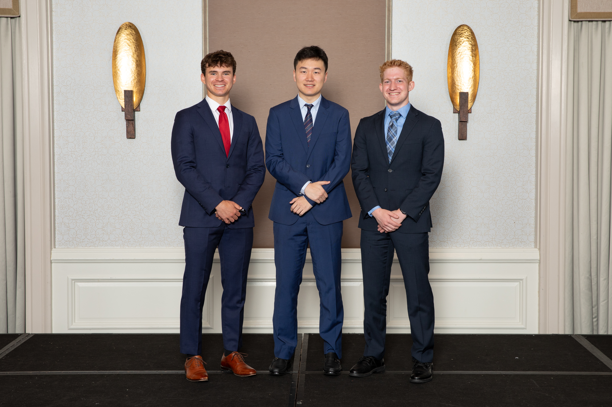
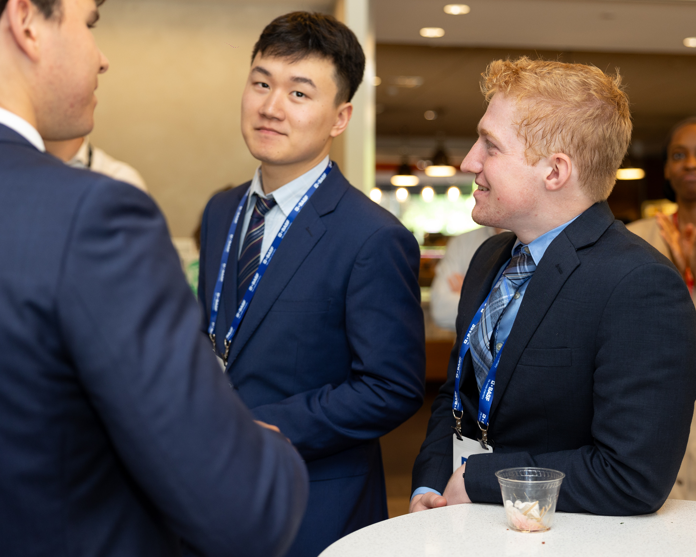
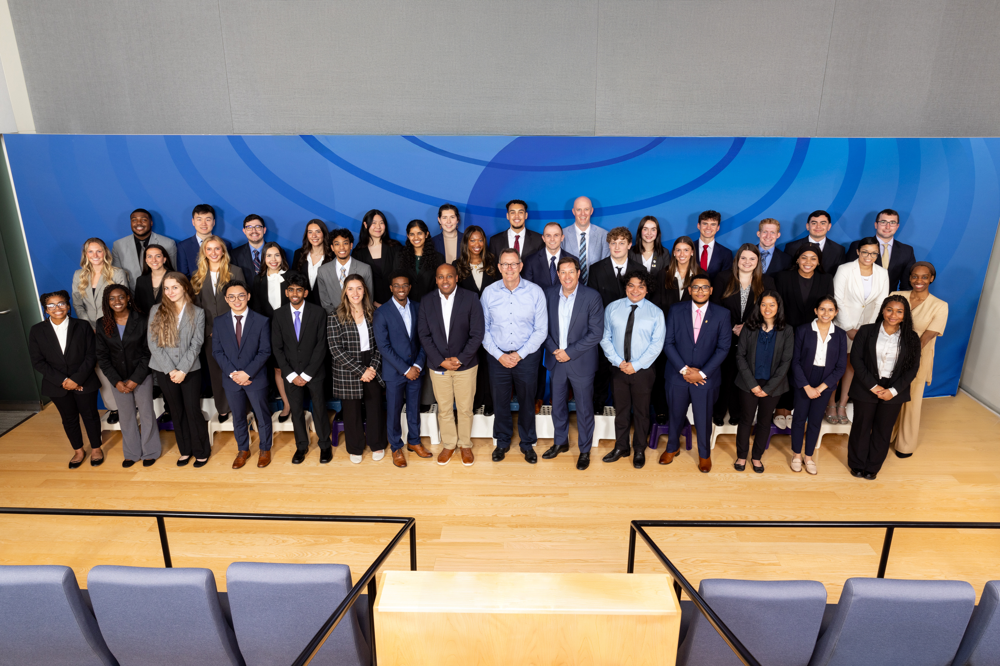
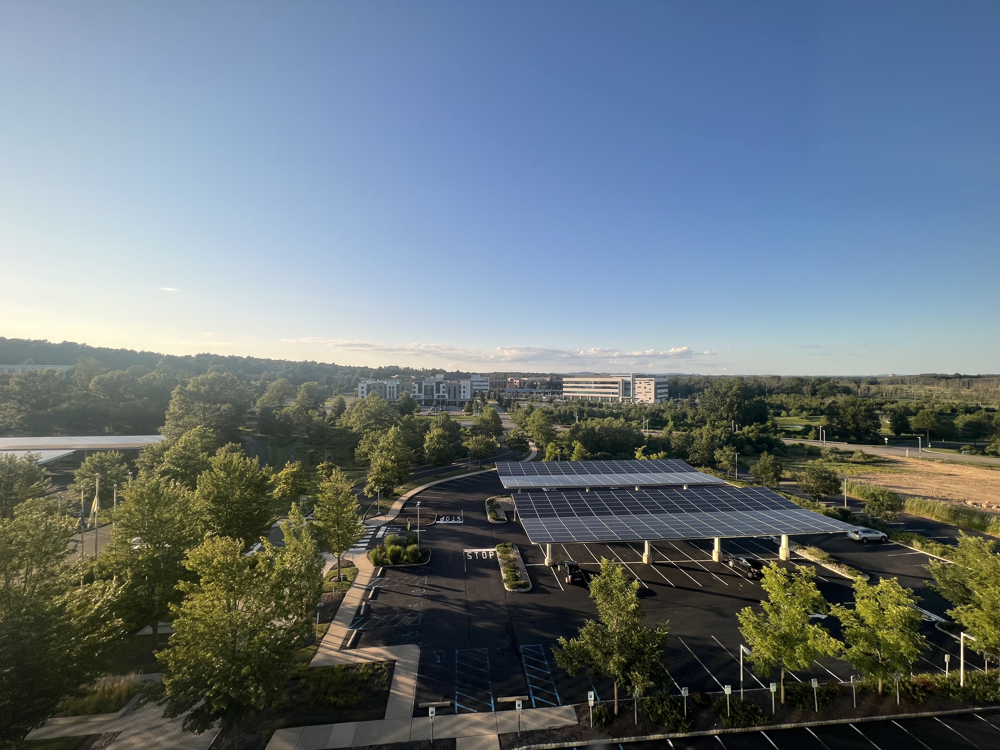
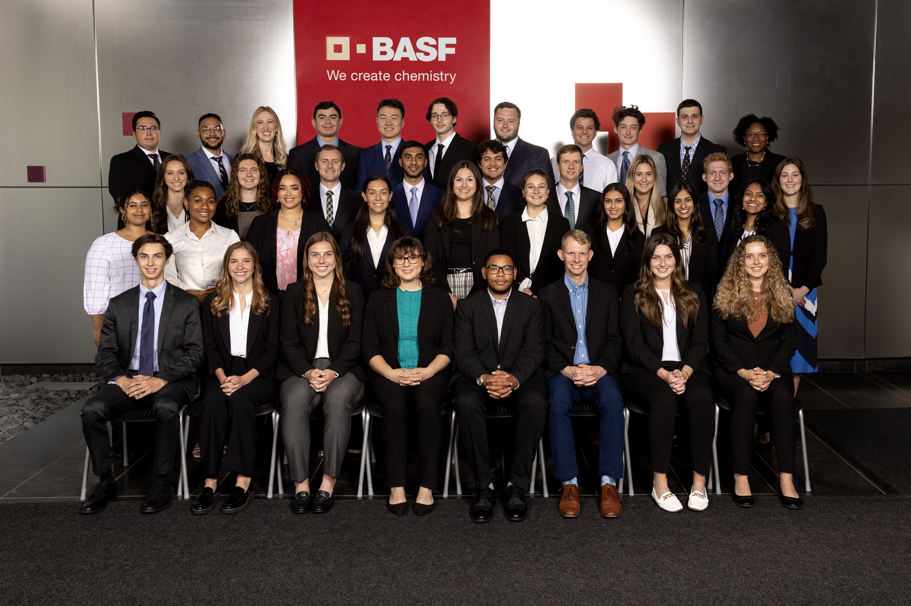
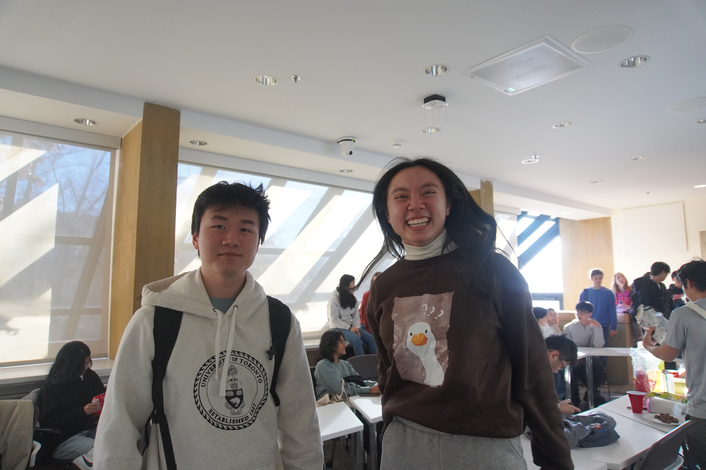
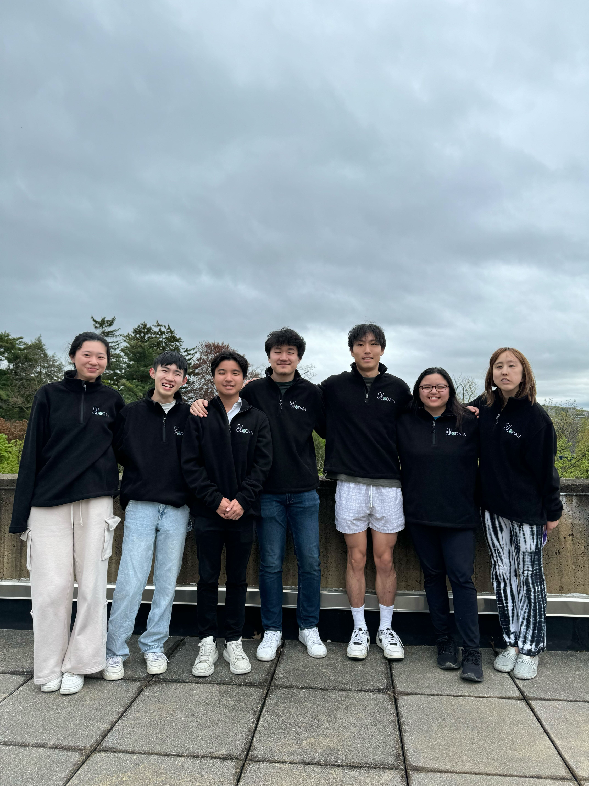
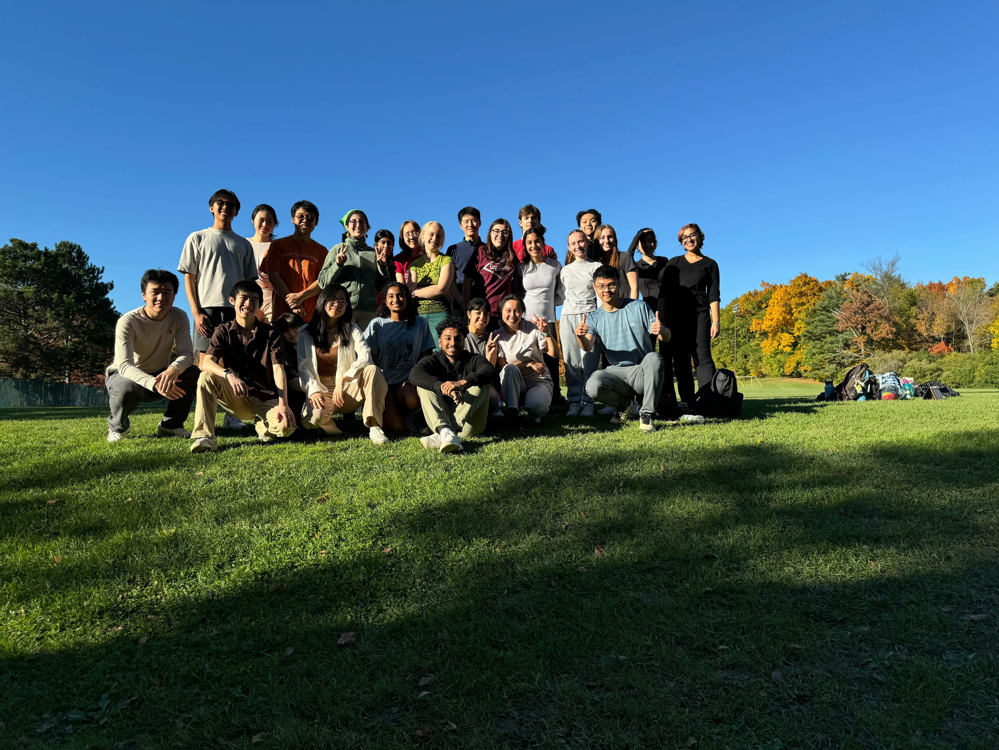

Cubist Systematic Summer 2025
New York, NY
This summer, I will join Cubist Systematic Strategies, the quantitative arm of Point72, as a Data Analyst Intern. I’ll be working with large datasets to support the development and evaluation of systematic trading models.
I look forward to gaining hands-on experience in data-driven research, collaborate with quantitative teams, and learn more about how data powers real-time decision-making in systematic trading.
BASF Summer 2024
Charlotte, NC
In the summer of 2024, I returned to BASF as a Data Science Intern, where I focused on developing data-driven solutions to enhance business performance. Working closely with domain experts, I built a time series analysis framework in Python to validate physical production models.
This framework provided actionable insights into process behavior and performance risks, identifying hardware limitations through rigorous statistical testing. I also designed and implemented machine learning models to forecast production demand, with the goal of optimizing resource allocation and reducing potential financial risk.
Furthermore, I engineered a fully automated end-to-end data pipeline, from SQL-based extraction to model deployment, ensuring seamless integration with existing systems.



BASF Summer 2023
Florham Park, NJ
In Summer 2023, I joined BASF as a Data Science Intern, where I focused on applying statistical modeling and predictive analytics to support investment and market strategy. I developed a predictive model with over 85% accuracy to analyze market trends, drawing on historical and real-time economic data.
I also built a framework that leveraged regression analysis and hypothesis testing to evaluate the significance of various market indicators. The results provided critical insights to guide data-informed decision-making across business units.


CU GeoData 2022–2024
Ithaca, NY
Since Fall 2022, I’ve served as the Data Team Lead for CU GeoData, a student-led engineering project team at Cornell University. I lead a team of over ten members on a range of data-driven projects, applying both data science methodologies and generative AI tools to solve real-world problems.
In addition to technical contributions, I coordinate closely with project stakeholders, manage the team’s AWS Cloud infrastructure, and facilitate collaboration across subteams. I also organize and lead weekly meetings, onboard new members, and mentor students in data science techniques and best practices.


